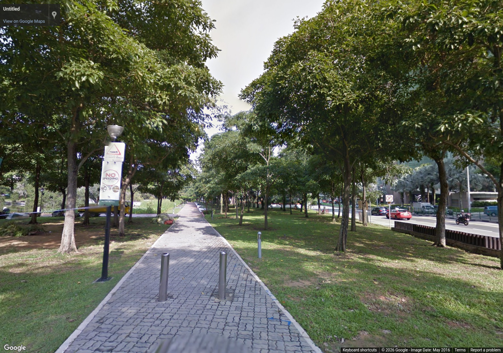
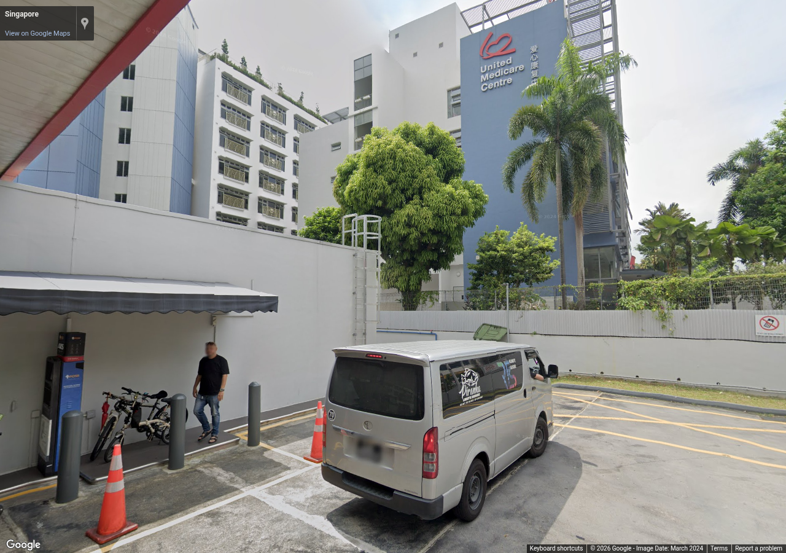

Source 2016-05, heading 270°, pitch 5°, zoom 1. Metadata / review

Source 2024-03, heading 280°, pitch 5°, zoom 1. Metadata / review
Authorized reference screenshots. Attribution retained. Open full-size images to review clarity; capture success alone is not visual acceptance.

